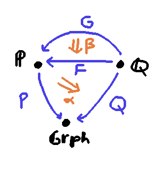

Stretchable Edges in Graphs
Categories vs. Graphs
If I have two path graphs, say $G_1$ has one edge, and $G_2$ has two
edges, then there isn't a graph homomorphism from $G_1$ to
$G_2$ that maps the first vertex to the first vertex and the last
vertex to the last vertex.
However, if I have two categories $\C_1$ and $\C_2$, of seemingly the same shape,
there is a functor from one to the other that maps the first object
to the first object and the last object to the last object.
Why is this? A reasonable answer is: because categories
have composition. The existence of a morphism $0\to 1$
and a morphism $1\to 2$ in $\C_2$ requires that there is also a
composite morphism $0\to 2$, and it is this morphism that we're
able to send the morphism $0\to 1 \in \C_1$ to.
Stretchable Edges
Here's a different answer. (Maybe less reasonable!) It's because
graph edges aren't stretchable. But what if they were? Or
at least what if some of them were? Let's try to imagine
what this would be like. We want to live in an larger world of
graphs, where each edge might be an ordinary, non-stretchable
edges, but also might be a stretchable edges.
The key property of a stretchable edge is that we should be able to map it onto
any arbitrarily long path of edges in the codomain graph, consisting of an arbitrary
mixture of regular and stretchable edges.
We should not be able to map a regular edge onto a stretchable edge.
For if we could, composition of graph homomorphisms would require us to map
a nonstretchable edge onto a nontrivial path, which is not allowed.
Defining the Stretchable Edge Object
Maybe we can understand the stretchable edge, call it $S$, by giving some kind of account of how other
ordinary graphs ought to be able map into it, and how it maps into them.
One intuition to start with is that it smells like we are saying that to have a map
out of $S$ is the same thing
as showing that there exists some $n$ such that there's a map out of $P_n$, the path with $n$ edges.
Conversely, to map into $S$, we could demand a map for every $n$ from some other graph
into $P_n$:
Both of these claims seem to allow "too many" maps, however. In the example above of maps from the stretchable
edge into $P_4$, nothing stops us from choosing as an existential witness
an $n$ much bigger than 4, and picking one of the many maps from a long path graph into $P_4$.
And in the other example, nothing stops us from mapping even the single vertex chaotically into the interior
of various paths, which doesn't seem to correspond to any sensible map from the single vertex into $S$.
Limits and Colimits
Therefore we want to "cut down" the space of maps into and out of $S$.
Because we used a "there exists" in the definition of maps-out-of $S$, we will use a colimit to quotient out by an equivalence relation.
Because we used a "for all" in the definition of maps-into $S$, we will use a limit to filter out maps
that satisfy a coherence condition.
The diagram category, call it $\P$, which we will take the limits and colimits over is this:
- an object is a path graph $P_n$ for some $n\in \N$.
- a morphism $P_n \to P_m$ is any graph homomorphism from $P_n$ to $P_m$ that preserves the "first vertex" and "last vertex"
of the path.
We then say that a morphism out of $S$ into a graph $G$ is an element of
\[\mathop{\mathrm{colim}}\limits_{P_n\in \P^{op}} \hom(P_n, G) \]
So as before, a morphism is given by choosing an $n$, and exhibiting a graph homomorphism from
$P_n$ to $G$, but the colimit means that we identify the pair $\langle P_n, f : P_n \to G \rangle$
with the pair $\langle P_m, (f \o \phi) : P_m \to G \rangle$ whenever $\phi$ is a morphism $P_m \to P_n$
in $\P$.
For example, the following $f$ and $f\o\phi$ are identified in the colimit.
We say that a morphism into $S$ from a graph $G$ is an element of
\[\mathop{\mathrm{lim}}\limits_{P_n\in \P} \hom(G, P_n) \]
Concretely, this is an $n$-index family $(f_n : P_n \to G)_{n\in \N}$ of maps into $G$, with the property that,
for any map $\phi : P_m \to P_n$, we have
\[\phi \o f_n = f_m\]
This constrains the possible maps from the single vertex graph
to $S$. Suppose towards a contradiction that
there exists $n \ge 2$ such that we decided to have $f_n$ map the vertex
into the interior of $P_n$. There is map $\phi_L : P_n \to P_1$
that sends that interior vertex to the first vertex of $P_1$, and also
there is a map $\phi_R : P_n \to P_1$ that sends that interior vertex to the last vertex of $P_1$.
We have
\[\phi_L \o f_n = f_1 = \phi_R \o f_n\]
which requires $f_1$ to map the vertex to both vertices of $P_1$ simultaneously, a contradiction.
Therefore there are only two maps from the vertex graph to $S$: one that maps the vertex
to the first vertex of every $P_n$, and one that maps it to the last vertex of every $P_n$.
Composition
If $G_1, G_2$ are graphs, and we have a map $G_1 \to S$ and a map $S \to G_2$, we should be able to compose
them to get a map $ G_1 \to G_2$. So, following the above prescriptions, let's suppose we have
\[ ( f_n :G_1 \to P_n)_{n\in \N} : \mathop{\mathrm{lim}}\limits_{P_n\in \P} \hom_{\C}(G_1,P_n)\]
and
\[ \langle P_n, g:P_n \to G_2 \rangle : \mathop{\mathrm{colim}}\limits_{P_n\in \P^{op}} \hom_{\C}(P_n, G_2)\]
Given this raw data, we absolutely can output $g \o f_n : G_1 \to G_2$ as our answer. But because
we've used data coming from a colimit, we have to show that our computation is well-defined, i.e.
that it respects the equivalence relation of the colimit.
So let's imagine that instead of $\langle P_n, g\rangle$ we were given a different (but equivalent)
element $\langle P_m, g \o \phi\rangle$ of the colimit, for some $\phi : P_m \to P_n$. Then we would
have computed $g \o \phi \o f_m$ as our answer. But the limit property of $f$ guarantees
that $\phi \o f_m = f_n$, so this is the same morphism $G_1 \to G_2$ after all. We can successfully
compose morphisms $G_1 \to S$ and $S \to G_2$!
Maps from $S$ to itself
If we want to add $S$ as an object to the category of graphs, knowing what the maps out of and into $S$ are isn't enough:
we also need to account for maps from $S$ to itself, and how they compose with themselves, and with
other maps adjacent to $S$.
And $S$ isn't the only object we'd like to add! Ideally we'd like to have all graphs that include
many stretchable edges in them.
At this point I engage in a bit of optimistic guessing, and try to think about
the category where
- an object is a functor into the category of graphs
- a morphism from $(P : \P \to \rgrph)$ to $(Q : \Q \to \rgrph)$ is an element of
\[ \mathop{\mathrm{lim}}\limits_{q\in \Q^{op}} \mathop{\mathrm{colim}}\limits_{p\in \P^{op}} \hom_{\rgrph}(P(p), Q(q))\]
I conjecture that this category is where all graphs with stretchable edges live.
This definition at least captures everything that I've thought of above as a special case.
An ordinary graph is given by the functor out of the one-object category into $\rgrph$, which picks
out the graph in question. If we consider the definition of morphisms from $G_1 : \mathbf{1} \to \rgrph$ to
$G_2 : \mathbf{1} \to \rgrph$, we get just a trivial limit of the trivial colimit that yields exactly the
homset between $G_1$ and $G_2$ in $\rgrph$.
One can also see that the single stretchable edge graph $S$ exists as the object which is the inclusion
functor $\P \to \rgrph$, and that morphisms from it to ordinary graphs and vice-versa match the definitions
above: in either case one of the colimit or limit degenerates into triviality, leaving the other.
The reason why I think the limit has to come before the colimit is so that identity morphisms can be constructed at all.
In first-order logic, we can prove
\[\forall x. \exists y.P(y) \imp P(x)\]
but not
\[\exists y. \forall x.P(y) \imp P(x)\]
so $\lim \colim$ works better than $\colim \lim$.
Lax Slice Category
Furthermore, I think this category admits an even more compact description as a kind of lax slice category $\rcat/\rgrph$.
- an object is any functor $P : \P \to \rgrph$ in $\rcat$.
- a morphism from $(P : \P \to \rgrph)$ to $(Q : \Q \to \rgrph)$ is a pair consisting
of a functor $F: \Q \to \P$ and a natural transformation $\alpha : P\o F \to Q$.
- ...except we identify morphisms that are related by a natural transformation as follows.
If $\langle F, \alpha \rangle$ is a morphism as above from
$(P : \P \to \rgrph)$ to $(Q : \Q \to \rgrph)$, then for any $G : \Q \to \P$ and any
$\beta : G \to F$, we consider
\[\langle F, \alpha\rangle \equiv \langle G, \alpha \o \beta\rangle\]
to be the same morphism from $(P : \P \to \rgrph)$ to $(Q : \Q \to \rgrph)$.

The naturality of $\alpha$ seems to capture the coherence requirement of the limit in the previous
definition, and the identification-up-to-tacked-on-natural-transforms seems to capture the quotienting
caused by the colimit.
If was more sophisticated, maybe I could see the $\beta$ as actually being a 2-cell in some lax slice 2-category,
but I think I run out of higher-categories-brain trying to think through that.